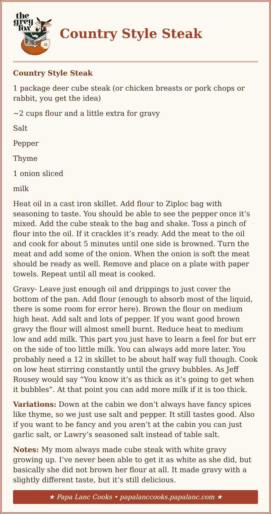

WELCOME
Country Style Steak
1 package deer cube steak (or chicken breasts or pork chops or rabbit, you get the idea)
~2 cups flour and a little extra for gravy
Salt
Pepper
Thyme
1 onion sliced
milk
Heat oil in a cast iron skillet. Add flour to Ziploc bag with seasoning to taste. You should be able to see the pepper once it’s mixed. Add the cube steak to the bag and shake. Toss a pinch of flour into the oil. If it crackles it’s ready. Add the meat to the oil and cook for about 5 minutes until one side is browned. Turn the meat and add some of the onion. When the onion is soft the meat should be ready as well. Remove and place on a plate with paper towels. Repeat until all meat is cooked.
Gravy- Leave just enough oil and drippings to just cover the bottom of the pan. Add flour (enough to absorb most of the liquid, there is some room for error here). Brown the flour on medium high heat. Add salt and lots of pepper. If you want good brown gravy the flour will almost smell burnt. Reduce heat to medium low and add milk. This part you just have to learn a feel for but err on the side of too little milk. You can always add more later. You probably need a 12 in skillet to be about half way full though. Cook on low heat stirring constantly until the gravy bubbles. As Jeff Rousey would say “You know it’s as thick as it’s going to get when it bubbles”. At that point you can add more milk if it is too thick.
Variations: Down at the cabin we don’t always have fancy spices like thyme, so we just use salt and pepper. It still tastes good. Also if you want to be fancy and you aren’t at the cabin you can just garlic salt, or Lawry’s seasoned salt instead of table salt.
Notes: My mom always made cube steak with white gravy growing up. I’ve never been able to get it as white as she did, but basically she did not brown her flour at all. It made gravy with a slightly different taste, but it’s still delicious.

WELCOME
Converted from the original file for viewing — open/download the original to edit it.